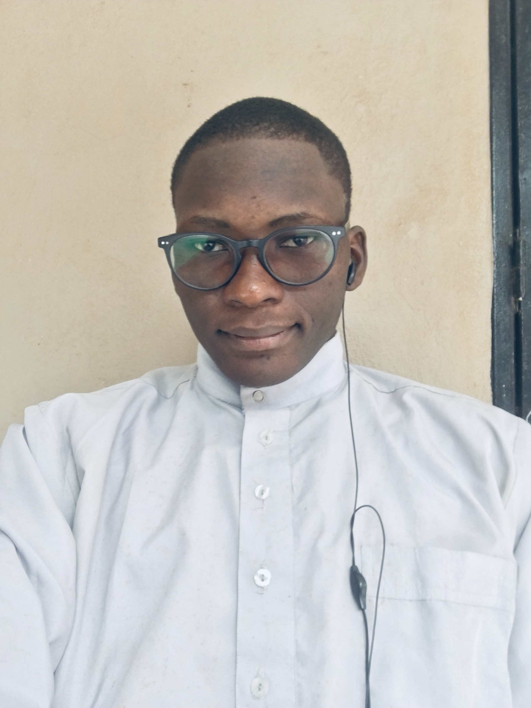

<div class="about" id="about">
  <div class="box-about" >
<div class="txt-about" >

  <h2 ><span>01.</span>A props de moi</h2>
  <p>
    Bonjour ! Je m'appelle Almamy Ali Haidara, je suis étudiant en 2er année
    Analyse et la programmation a l’institut supérieur de la technologie
    applique au Mali et j'aime créer des choses qui vivent sur Internet. Mon
    intérêt pour le développement web a commencé en 2022 lorsque j'ai décidé
    d'essayer d'éditer des pages web m'a appris beaucoup de choses sur le HTML
    et le CSS !
  </p>
  <p>
    Aujourd'hui, j'ai eu le privilège de travailler sur quel que projet en
    j’ai autre langage de programmation. Aujourd'hui, je me concentre
    principalement sur la création des application web avec des technologie du
    web3.
  </p>
  <p>
    Voici quelques technologies avec lesquelles j'ai travaillé récemment :
    <span class="lst">
      <li>
        <i class="pi pi-caret-right"></i>
        <p>JavaScrit (ES6+)</p>
      </li>
      <li>
        <i class="pi pi-caret-right"></i>
        <p>Vue.js</p>
      </li>
      <li>
        <i class="pi pi-caret-right"></i>
        <p>Angular.js</p>
      </li>
      <li>
        <i class="pi pi-caret-right"></i>
        <p>Node.js</p>
      </li>
      <li>
        <i class="pi pi-caret-right"></i>
        <p>TypeScript</p>
      </li>
      <li>
        <i class="pi pi-caret-right"></i>
        <p>Wordpress</p>
      </li>
    </span>
  </p>
</div>
<div class="img-about">
  <div class="img-container">

    
  </div>
</div>
</div>
</div>

